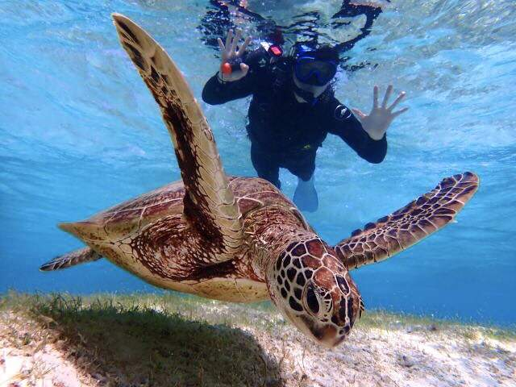
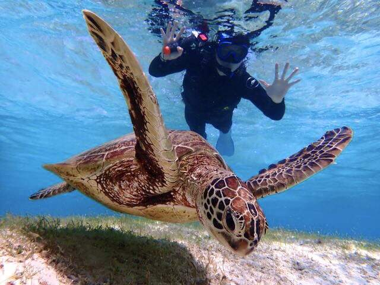

Hikkaduwa Hatchery
Situated a few kilometres north of the main Hikkaduwa town lies the Sea Turtle Hatchery and Rescue Centre, a centre with the aim of conserving some of the endangered species of turtles in the world. It is just one of many turtle hatcheries in the southern coast of the island. Initially starting as a community project to help protect the biodiversity of the southern coast, it is now a fully-fledged hatchery and rescue centre with dedicated teams that work round the clock to study, care and protect several turtle species.
Experence
- Learning about sea turtle conservation efforts.
- Guided tours to see different turtle stages.
- Nest monitoring and hatchling releases.
- Supporting rehabilitation of injured turtles.
- Withnessing unique and traditional fishing methods.
- Discovering the best surfing spots to suite your skill level.


 
